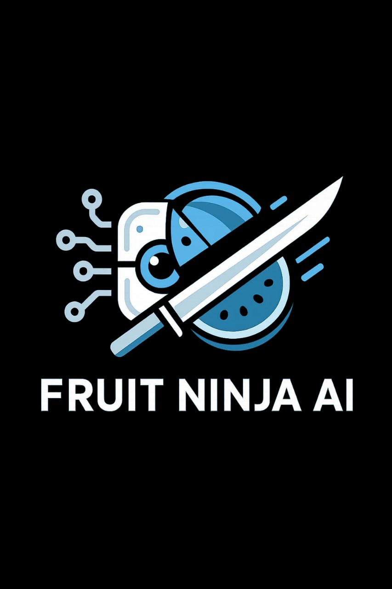
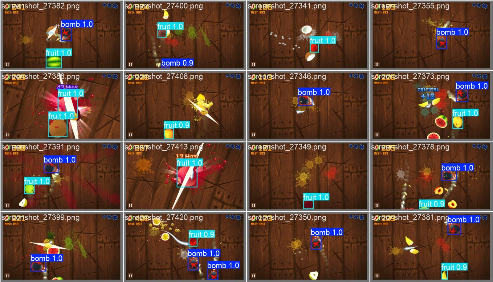
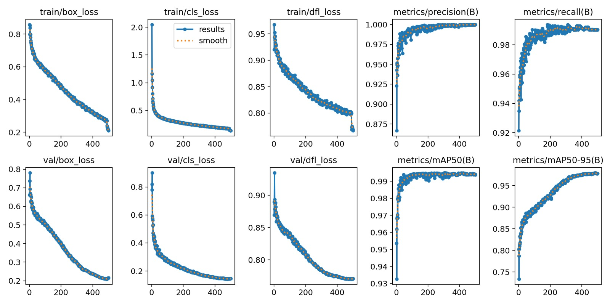
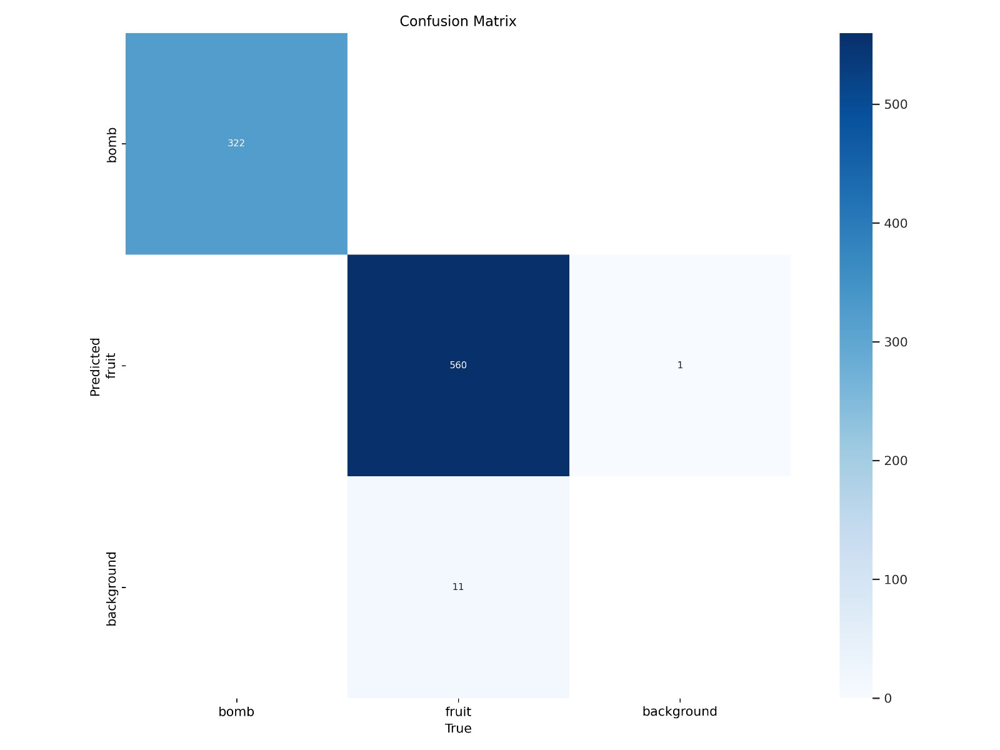
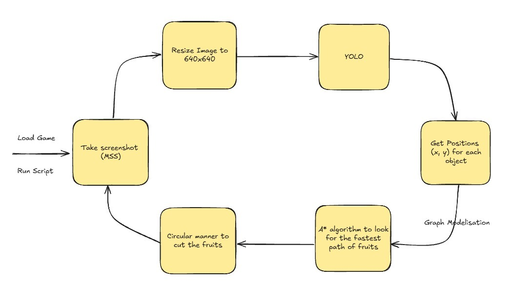

Collecte de Données, Modélisation et Techniques de Découpe
Ce document détaille le processus complet de développement du système d’IA pour Fruit Ninja, depuis la collecte des données jusqu’aux techniques de découpe automatisée.
Collecte et Préparation des Données
Processus de Capture d’Images
La création d’un dataset de qualité constitue la première étape cruciale du projet. Pour obtenir des données représentatives du jeu Fruit Ninja, un processus de capture systématique a été mis en place.
Méthode de Capture : Plusieurs heures de jeu ont été consacrées à la collecte de données, utilisant la bibliothèque Python MSS (Multi-Screen Screenshots) pour capturer les images d’écran en temps réel. Cette approche garantit une capture haute fréquence et non intrusive du gameplay.
import mss
import time
from PIL import Image
def capture_gameplay():
with mss.mss() as sct:
# Définir la zone de capture (zone de jeu)
monitor = {"top": 100, "left": 200,
"width": 800, "height": 600}
while True:
# Capturer l'écran
screenshot = sct.grab(monitor)
# Convertir en image PIL
img = Image.frombytes("RGB", screenshot.size,
screenshot.bgra, "raw", "BGRX")
# Sauvegarder avec timestamp
timestamp = int(time.time() * 1000)
img.save(f"data/raw_images/frame_{timestamp}.png")
time.sleep(0.1) # Capture toutes les 100ms
Volume des Données : Environ 1500 images ont été collectées, représentant diverses situations de jeu : différentes combinaisons de fruits, positions des bombes, angles de lancement, et états de jeu variés.
Annotation et Étiquetage
L’annotation manuelle des images a été réalisée à l’aide de la plateforme en ligne makesense.ai, un outil d’annotation gratuit et intuitif particulièrement adapté aux projets de vision par ordinateur.
Processus d’Annotation :
Import des Images : Téléchargement du dataset sur makesense.ai
Définition des Classes : - Fruits (banane, pomme, orange, pastèque, etc.) - Bombs
Annotation par Bounding Box : Délimitation précise de chaque objet visible
Export au Format YOLO : Génération des fichiers d’annotation .txt compatibles
Défis d’Annotation : - Objets en mouvement rapide nécessitant une précision élevée - Superposition d’objets créant des ambiguïtés de délimitation - Variation d’échelle des objets selon leur position sur l’écran
Modèle YOLOv8-Nano : Architecture et Performance
Choix du Modèle
Le modèle YOLOv8-nano d’Ultralytics a été sélectionné pour ce projet en raison de ses caractéristiques optimales pour une application en temps réel :
Légèreté : Taille de modèle réduite permettant une inférence rapide
Efficacité : Balance optimale entre précision et vitesse de traitement
Flexibilité : Architecture adaptable aux spécificités du dataset
Métriques de Performance
Le modèle final présente des performances exceptionnelles :
{kind=link}

{kind=link}

{kind=link}

Architecture du Système de Décision
Le système de découpe automatisée repose sur une architecture modulaire combinant détection, analyse stratégique et exécution de mouvements.
Pipeline de Traitement :
{kind=link}

Algorithme A* pour l’Optimisation de Trajectoire
L’algorithme A* (A-star) constitue le cœur du système de prise de décision, calculant les trajectoires optimales de découpe.
Principe de Fonctionnement :
L’algorithme traite l’écran de jeu comme une grille où chaque position a un coût associé :
def _distance(start, end):
return abs(start[0] - end[0]) + abs(start[1] - end[1])
def modified_astar(start: tuple, end: tuple, bombs: torch.Tensor, point_inside_bomb: callable, map_size: int, interval: int=1):
# Find the shortest path around the bombs with improved pathing for fruits near bombs
# Consider 8 directions instead of 4 to allow for more flexible paths
directions = [(0, 1), (0, -1), (-1, 0), (1, 0), (1, 1), (1, -1), (-1, 1), (-1, -1)]
close_set = set()
came_from = {}
gscore = {start: 0}
fscore = {start: _distance(start, end)}
open_heap = []
heapq.heappush(open_heap, (fscore[start], start))
# Allow for a more direct path toward the end by weighting heuristic
heuristic_weight = 1.2
while open_heap:
# Get the point with the lowest fscore
current = heapq.heappop(open_heap)[1]
# If the current point is the end point, reconstruct the path and return it
if current == end:
path = deque()
i = interval
while current in came_from:
if i == interval:
path.appendleft(current)
i = 0
current = came_from[current]
i += 1
# Add the last point on the end fruit
if start in came_from:
path.appendleft(start)
return list(path)
# Add the current point to the close set
close_set.add(current)
# Check the neighbors of the current point
for dx, dy in directions:
# Get the neighbor point
neighbor = (current[0] + dx, current[1] + dy)
# If the neighbor is in the close set, outside the screen, or inside a bomb, skip it
if (neighbor in close_set or
neighbor[0] < 0 or neighbor[0] >= map_size or
neighbor[1] < 0 or neighbor[1] >= map_size or
point_inside_bomb(neighbor[0], neighbor[1], True)):
close_set.add(neighbor)
continue
# Give diagonal moves a slightly higher cost (sqrt(2) ≈ 1.414)
move_cost = 1.414 if dx != 0 and dy != 0 else 1.0
# Calculate the gscore of the neighbor
tentative_gscore = gscore[current] + move_cost
# If the neighbor is not in the open set or the gscore is lower than the current gscore of the neighbor
if (neighbor not in gscore or tentative_gscore < gscore[neighbor]):
# Update the gscore, fscore, and add the neighbor to the open set
came_from[neighbor] = current
gscore[neighbor] = tentative_gscore
# Weight the heuristic to favor more direct paths
fscore[neighbor] = gscore[neighbor] + heuristic_weight * _distance(neighbor, end)
heapq.heappush(open_heap, (fscore[neighbor], neighbor))
# If there is no path, return an empty list
return []
Stratégies de Découpe Avancées
Priorisation des Cibles :
Le système évalue chaque situation selon plusieurs critères :
Sécurité : Évitement absolu des bombes (priorité maximale)
Efficacité : Maximisation du nombre de fruits coupés par mouvement
Score : Priorisation des fruits rares et objets bonus
Timing : Optimisation du moment de découpe selon la trajectoire
Techniques de Découpe :
Découpe Linéaire : Trajectoire droite pour fruits alignés
Découpe en Arc : Mouvement courbe pour capturer plusieurs groupes
Découpe Séquentielle : Enchaînement rapide de mouvements courts
Découpe d’Évitement : Contournement des bombes avec trajectoire complexe
Exécution et Contrôle des Mouvements
Interface de Contrôle :
Le système traduit les trajectoires calculées en commandes de souris précises :
Coordonnées de Départ : Position initiale du curseur
Vitesse de Mouvement : Adaptée à la distance et au timing requis
Précision de Trajectoire : Interpolation pour mouvements fluides (circulaires)
Synchronisation : Timing précis avec les objets en mouvement
Optimisations de Performance :
Prédiction de Mouvement : Anticipation des trajectoires des objets
Cache de Calculs : Réutilisation des chemins similaires
Filtrage Temporel : Lissage des décisions pour éviter les oscillations
Adaptation Dynamique : Ajustement en temps réel selon les performances